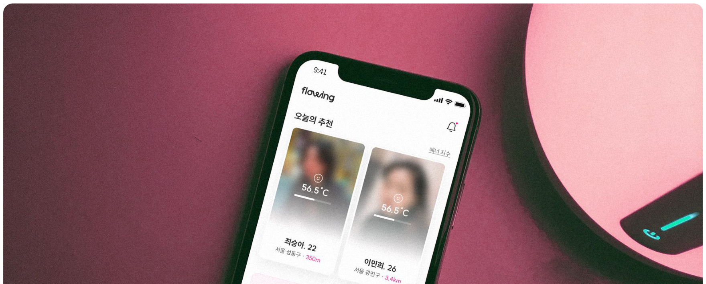
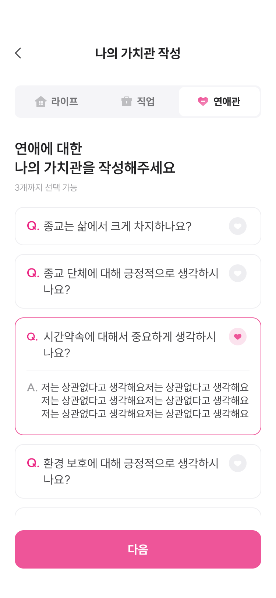
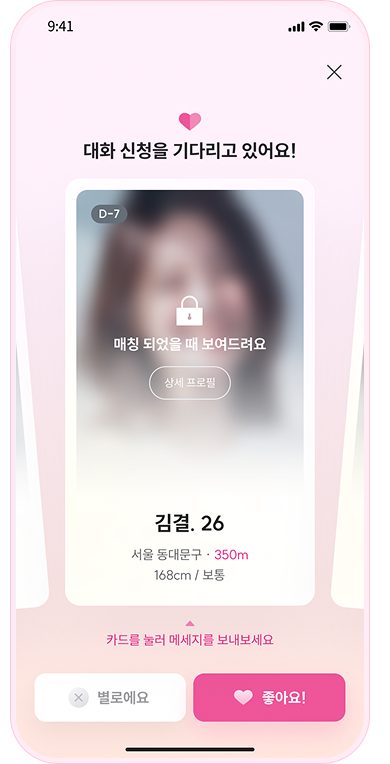
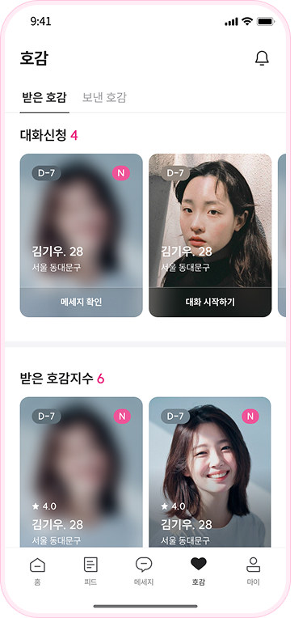
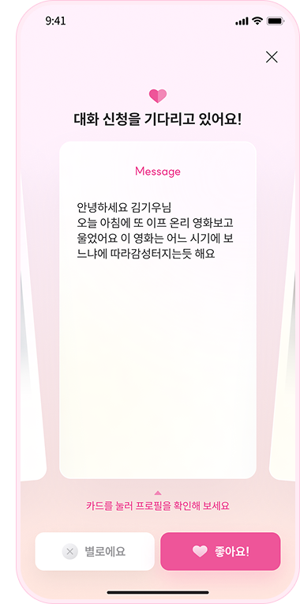

사진과 조건을 빠르게 비교
나이·거리·직업·사진이 첫 판단을 만들고, 상대의 생각은 연결 이후에 확인합니다.
PROJECT 02 · SERVICE PLANNING
Flowing은 상대의 일상·취향·가치관을 먼저 탐색하고, 대화 신청과 수락을 거쳐 관계를 시작하도록 설계한 모바일 웹 서비스입니다.

PROJECT PREMISE
제가 직접 소개해준 사람들을 지켜보니 나이·직업 같은 조건보다 생각과 대화 방식이 맞는 관계가 결혼까지 이어졌습니다. 이 관찰에서 “첫 판단의 순서를 바꿔보자”는 프로젝트가 시작됐습니다.

나이·거리·직업·사진이 첫 판단을 만들고, 상대의 생각은 연결 이후에 확인합니다.
상대가 남긴 글과 답변을 읽고 대화 소재를 찾은 뒤, 연결 여부를 결정합니다.
USER INTERVIEW
보관된 인터뷰 두 건에서 상대를 판단할 정보와 자연스럽게 말을 걸 소재가 부족하다는 문제를 확인했습니다. 표본 규모와 모집 방식이 남아 있지 않아 전체 사용자 결과로 일반화하지 않았습니다.
INTERVIEW 01 · JI HYUN“상대방이 어떠한 가치관을 가지고 있는지, 어떤 삶을 살고 있는지 조금 더 정보가 많았으면 좋겠어요.”
INTERVIEW 02 · SUNG MIN“새로운 만남을 즐기지만, 어느 정도 비슷하고 같은 취미를 즐길 수 있는 사람을 더 선호해요.”
사진과 조건만으로는 어떤 삶을 사는 사람인지 판단하기 어려웠습니다.
연결되어도 무엇을 물어볼지 몰라 대화가 형식적으로 시작될 수 있었습니다.
연결 전에 가치관과 일상을 읽게 하는 것을 핵심 목표로 정했습니다.
HYPOTHESIS TO DECISION
사진·나이·거리·키는 보조 정보로 남기되, 탐색의 첫 화면에서는 글·취향·가치관을 먼저 보도록 정보의 순서를 바꿨습니다.
사진을 먼저 비교하는 방식 자체를 핵심 문제로 보았습니다.
상대의 삶과 생각, 말을 걸 소재가 필요하다는 발화가 더 구체적이었습니다.
빠른 선택보다 탐색 시간을 확보하고, 콘텐츠를 대화의 맥락으로 사용합니다.
CORE JOURNEY
좋아요는 관심의 표현으로, 대화 신청은 연결 의사로 분리했습니다. 신청했다고 바로 채팅이 열리지 않고 상대가 메시지와 프로필을 확인한 뒤 수락합니다.
사진보다 글과 답변을 먼저 읽음
자기소개·음악·영화·여행 취향 확인
확인한 콘텐츠를 언급하며 대화 요청
신청 메시지와 프로필을 보고 결정
양측 의사가 확인된 뒤 채팅 개방
구조의 출처 좋아요·신청·수락 방식은 사용자 테스트로 검증한 결과가 아니라 블라인드·셀소 등 유사 서비스의 연결 구조를 참고한 벤치마크입니다.
CORE EXPERIENCE · 01
라이프·직업·연애관 질문 중 자신을 설명할 답변을 남깁니다. 탐색 화면에서는 사진보다 글과 관심 콘텐츠가 먼저 보이도록 정보 우선순위를 바꿨습니다.
WRITE → EXPLORE

CORE EXPERIENCE · 02
가벼운 관심 표시와 실제 연결 의사를 다른 행동으로 구분했습니다. 신청 메시지와 프로필을 확인한 상대가 수락해야 사진 확인과 대화가 이어집니다.
INTEREST → REQUEST

PHASED BUSINESS MODEL · PROPOSAL
아래 가격과 혜택은 출시 결과가 아니라 당시 작성한 단계별 도입안입니다. 먼저 대화와 파티 참여를 넓히고, 사용자 풀이 형성된 뒤 매니저 기반 프리미엄을 추가하는 구조입니다.
하루 1명 제한 없이 대화 신청
회당 50,000원 → 30,000원
관리형 매칭 없이 탐색·대화·파티로 교류
원하는 시점에 매니저 추천 요청
가치관·성향 분석 및 매칭 정보 생성
2회 무료, 이후 회당 30,000원
OFFLINE SERVICE BLUEPRINT · PROPOSAL
온라인에서 작성한 가치관 답변을 오프라인 대화의 재료로 연결합니다. 프로그램은 총 150분 운영안이며 실제 행사 운영 결과가 아닌 기획안입니다.
닉네임 사용·일정·규칙 안내
사전 답변의 주인을 맞히며 첫 대화 시작
연애·관계·삶에 대한 질문을 뽑고 답변과 추가 질문을 교환
앞선 답변을 소재로 관계를 확장
소감·호감 닉네임 작성
진행자가 발언 편중과 대화 정체를 조정합니다.
실명보다 답변과 대화에 집중하도록 운영합니다.
한쪽의 선택만으로 개인정보를 공유하지 않습니다.
ROLLOUT & VALIDATION PLAN
화면·수익 모델·파티 운영안을 하나의 서비스로 연결했지만 실제 출시와 성과 검증은 진행하지 못했습니다. 따라서 다음 단계의 판단 기준을 지표와 운영 질문으로 남겼습니다.
가치관 탐색과 대화 신청 구조를 운영하고 구독 의향을 확인
참여율·상호 선택·재참여와 회당 운영비를 확인
충분한 사용자 풀과 매니저 운영 역량을 확인한 뒤 도입
피드를 먼저 읽은 사용자가 상대 콘텐츠를 언급하는지 확인
피드 → 프로필 → 신청 → 수락 단계별 이탈을 확인
진행 인력, 장소비, 매니저 처리량과 개인정보 동의 절차 확인